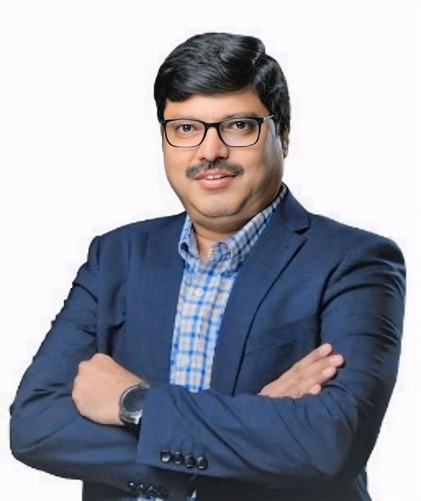

CFO | Investor | Strategic Advisor
Helping businesses scale, structure capital, and unlock long-term value.

Senior finance professional with 20+ years of experience in CFO leadership, investment structuring, and corporate strategy across Saudi Arabia and international markets.
Strategic investments through Tamkeen and development of construction platforms connecting contractors and suppliers.
Understanding debt vs equity classification under IFRS.
Structuring investments to optimize zakat base.
From reporting to strategic leadership.
Email: your-email@example.com
LinkedIn: https://www.linkedin.com/in/badi-uz-zaman-qureshi-51266916/